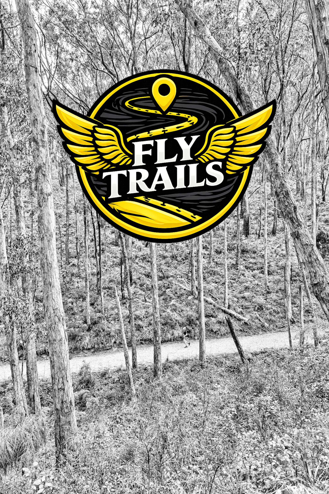

01 / YOUR ROUTE
A trail that
takes the stage.
Watch your route unfold across a map, with a moving marker and a clear view of the whole run at the finish.
YOUR RUN, REPLAYED
Turn a GPX file into a moving trail video. Add your run stats, save it, then share the adventure with your people.

THE FINISH LINE, IN YOUR CAMERA ROLL
Pick your GPX file and FlyTrail brings the route to life with a moving map, a runner marker, and your key stats at the finish. No editing skills needed.
01 / YOUR ROUTE
Watch your route unfold across a map, with a moving marker and a clear view of the whole run at the finish.
02 / YOUR EFFORT
Finish with your distance, elapsed time, and average pace. Choose kilometres or miles to match your run.
03 / MAKE IT YOURS
Add a hashtag to your video, so every share carries your running crew, your challenge, or your own little signature.
04 / YOUR PEOPLE
Preview and keep your videos in the app, then share by message or save a copy to Files.
YOUR NEXT RUN IS A GOOD STORY